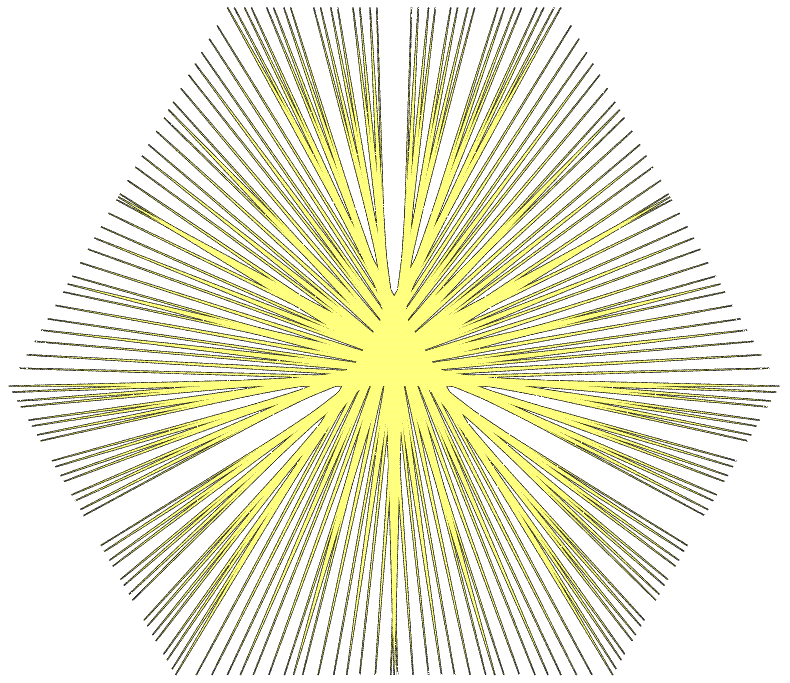
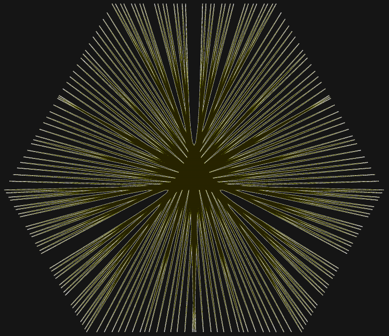

OpenAI says its models broke the Exponential Time Hypothesis
Three results in mathematics, computer science and physics went to outside experts to explain. The computer science claim, if it holds, rewrites a working assumption behind many papers.
Greg Brockman @gdb · President, OpenAI
The announcement, "Working with academic communities to build scientific understanding," described the results as "raw research data" and set out three ways of releasing them. Its four stated principles are transparency, no academic credit for OpenAI, recognition for the experts who vet each result, and their independence. Brockman, at 5:50pm EDT Monday:
"Announcing three major scientific discoveries, one each in mathematics (harmonic analysis), computer science (complexity theory), and physics (quantum field theory). AI starting to help us improve our understanding of the universe!"
The Exponential Time Hypothesis holds that Boolean satisfiability, the problem of whether a logic formula can be made true, needs time that grows exponentially with its variables. OpenAI says its system proved that false, with the proof checked in the Lean proof language. Ryan Williams of the Massachusetts Institute of Technology posted the paper, which claims 3-satisfiability (3SAT) on n variables can be solved in about exp(n/(log n)^(1/2+o(1))) time. Williams will vet the result with Russell Impagliazzo and Ramamohan Paturi of UC San Diego, two of the three researchers who first proposed the hypothesis. Brockman stressed the limits at 7:24pm EDT: "p still probably doesn't equal np."




In mathematics, OpenAI says its models proved Sogge's 1991 local smoothing conjecture in every dimension, which would also resolve the Kakeya and Stein restriction conjectures. That one is posted for anyone to pick apart. The physics result, a rigorous existence proof for quantum chromodynamics and for pure Yang–Mills theory, part of a Clay Millennium Prize problem, goes to a group led by the Nobel laureate David Gross, with Michael Douglas, Arthur Jaffe, Igor Klebanov and Nikita Nekrasov; its artifacts are withheld for now.
Noam Brown and Tim Sweeney @polynoamial · @TimSweeneyEpic
Brown, a researcher at OpenAI, measured the distance traveled at 9:06pm EDT: "Only 2.5 years ago, AI labs would highlight their frontier LLM performance on grade school math benchmarks (GSM8K). I can't wait to see where we'll be in another 2.5 years." Epic Games' chief executive answered the paper with one word: "Wow!" Musk, earlier on Monday: "Math done by humans is cooked hard."